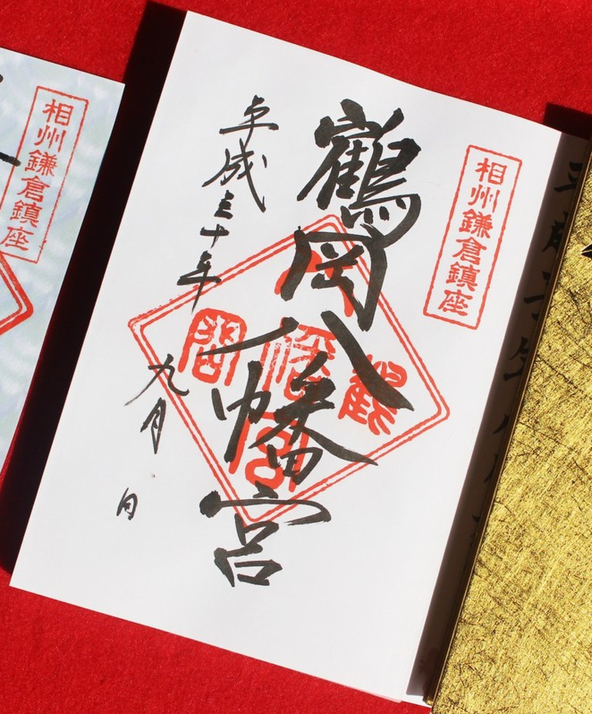
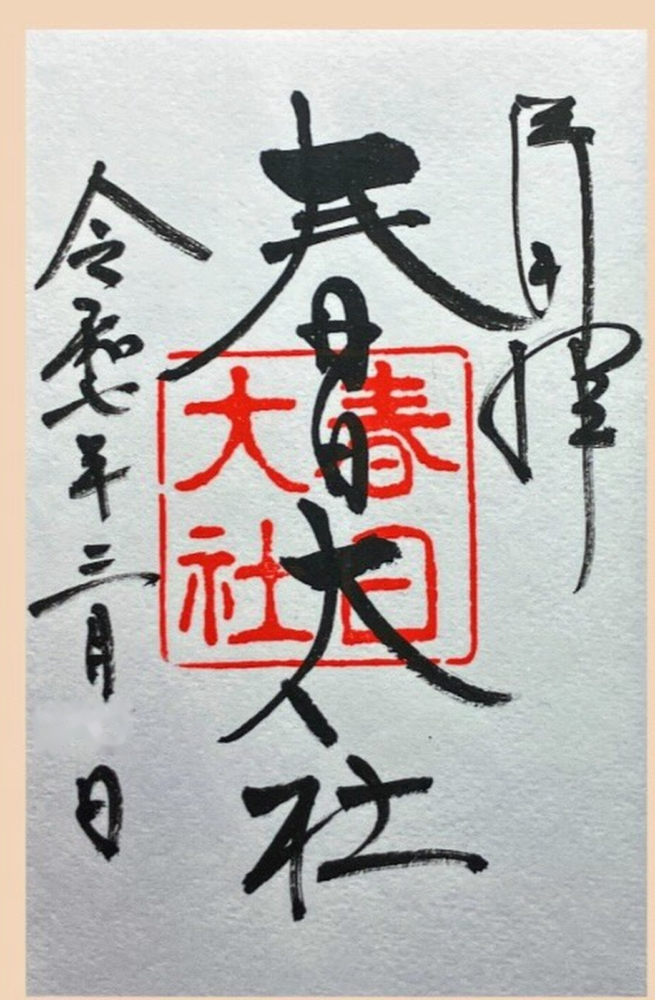
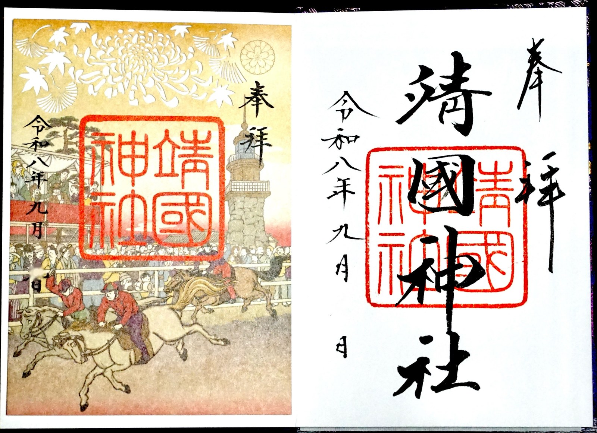
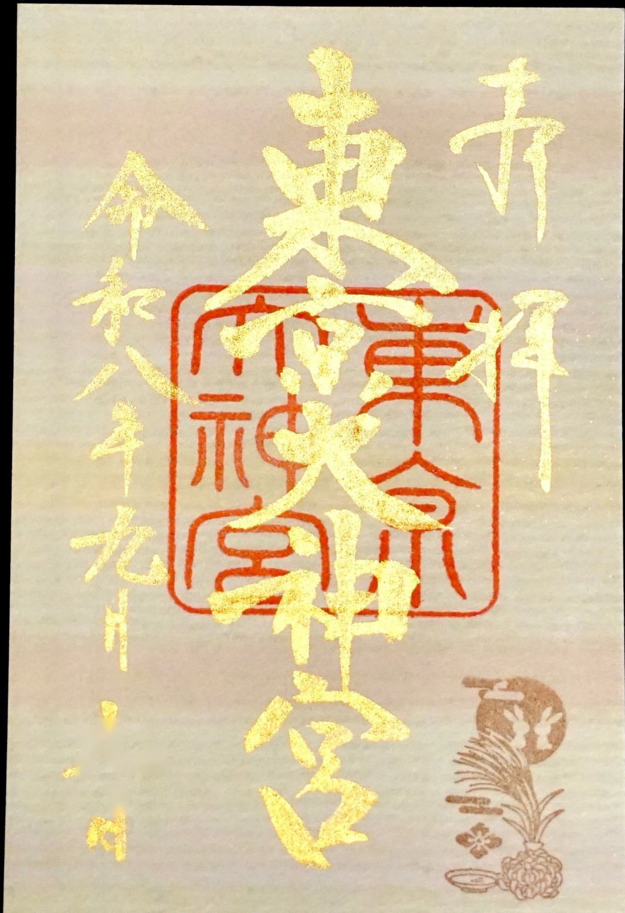
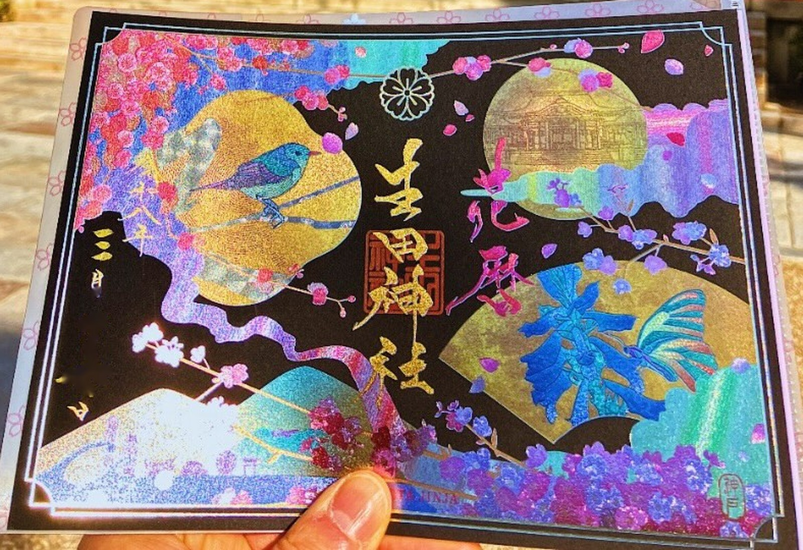

秋色さん
![わびなびロゴ]()
わびなび
神社と和文化のコミュニティ
参拝者 太郎
行きたい神社やお寺、使える時間や交通手段を選ぶだけ。
AIが最適な巡拝ルートを作成します。
エリアや条件からかんたん検索
限定・季節の御朱印をチェック
時間と交通手段からAIが提案
写真と一緒にみんなと共有
行きたい神社・お寺、使える時間、交通手段を選ぶだけ。わびなびだけの、AIによる巡拝ルート作成です。






